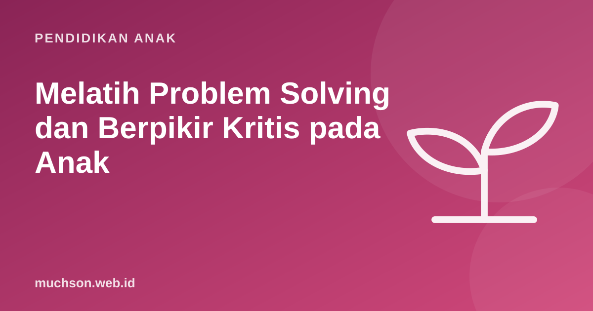

Beranda › Artikel › Pendidikan Anak
Pendidikan AnakMelatih Problem Solving dan Berpikir Kritis pada Anak
Kita ingin anak bisa menyelesaikan masalahnya sendiri: soal matematika yang sulit, mainan yang rusak, atau konflik dengan teman. Kemampuan ini tidak muncul begitu saja. Ia dilatih lewat pengalaman kecil sehari-hari, ketika orang dewasa menahan diri untuk tidak langsung memberi jawaban.

Problem solving dan berpikir kritis: bedanya
Problem solving adalah kemampuan menemukan jalan dari keadaan sekarang ke tujuan yang diinginkan. Berpikir kritis adalah kemampuan menilai informasi dan argumen: apakah ini benar, apa buktinya, adakah penjelasan lain? Keduanya saling membutuhkan. Untuk memecahkan masalah, anak perlu menilai ide-idenya; untuk menilai informasi, anak perlu menyelidiki seperti memecahkan teka-teki.
Empat langkah Polya untuk anak
Matematikawan George Pólya dalam bukunya How to Solve It (1945) merumuskan empat langkah memecahkan masalah. Langkah ini masih dipakai luas sampai sekarang dan mudah disederhanakan untuk anak:
| Langkah | Pertanyaan untuk anak |
|---|---|
| 1. Pahami | "Ceritakan soalnya dengan kata-katamu sendiri." "Apa yang dicari?" |
| 2. Rencanakan | "Pernah ketemu soal yang mirip?" "Bisa digambar?" "Mulai dari bagian mana?" |
| 3. Lakukan | "Coba jalankan rencanamu. Kalau macet, di langkah ke berapa?" |
| 4. Periksa | "Jawabannya masuk akal?" "Bisa dicek dengan cara lain?" |
Strategi yang bisa diajarkan
- Gambar masalahnya. Soal cerita jauh lebih mudah setelah digambar.
- Coba yang lebih kecil dulu. Kalau 100 terlalu besar, coba dengan 10.
- Cari pola. Kerjakan beberapa contoh, lihat apa yang berulang.
- Bekerja mundur. Mulai dari tujuan, lalu tanya "sebelum itu apa?"
- Coba, salah, perbaiki. Tebakan yang diuji lalu diperbaiki adalah strategi sah.
Berpikir kritis: pertanyaan yang ampuh
Berpikir kritis bisa dilatih lewat obrolan sehari-hari, terutama saat anak menyampaikan sesuatu yang ia dengar atau lihat:
Peran orang tua: menahan diri
Godaan terbesar orang tua adalah langsung memberi jawaban, karena lebih cepat dan anak berhenti merengek. Tetapi setiap kali kita menyelesaikan masalah untuk anak, ia kehilangan kesempatan berlatih. Coba urutan bantuan bertahap ini:
- Tunggu. Beri waktu beberapa menit sebelum menawarkan bantuan.
- Tanya. "Sudah coba apa saja?"
- Beri petunjuk kecil. "Coba lihat lagi kalimat kedua soalnya."
- Beri petunjuk lebih jelas. "Bagaimana kalau digambar dulu?"
- Contohkan sebagian. Kerjakan langkah pertama bersama, biarkan anak melanjutkan.
Bantuan bertahap seperti ini sering disebut scaffolding: dukungan yang dikurangi sedikit demi sedikit seiring anak makin mampu, seperti perancah bangunan yang dilepas setelah gedungnya berdiri.
Kegiatan sehari-hari yang melatih problem solving
- Merencanakan acara keluarga dengan anggaran tertentu.
- Memperbaiki benda sederhana bersama: mainan, sepeda, rak.
- Memasak dengan resep, termasuk menyesuaikan takaran.
- Permainan strategi seperti catur, congklak, dan permainan papan.
- Coding dan teka-teki logika, di mana umpan baliknya langsung terlihat.
Coding sangat efektif untuk melatih problem solving karena komputer memberi umpan balik jujur dan cepat: program berhasil atau tidak, dan anak bisa langsung mencoba lagi. Latihan Robo di PixelKode dirancang mengikuti langkah Polya, lengkap dengan petunjuk bertahap seperti scaffolding di atas.
Tanya jawab
Bagaimana melatih problem solving pada anak?
Apa bedanya problem solving dan berpikir kritis?
Usia berapa anak bisa diajari berpikir kritis?
Apakah memberi jawaban langsung itu salah?
Sumber dan bacaan lanjut
- Pólya, G. (1945). How to Solve It. Princeton University Press
- Harvard Center on the Developing Child: Executive Function
- Wing, J. M. (2006). Computational Thinking
- OECD: PISA 2022 Results (termasuk berpikir kreatif dan pemecahan masalah)